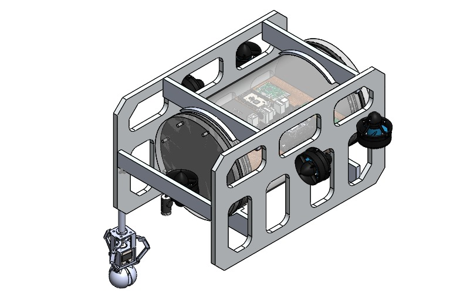
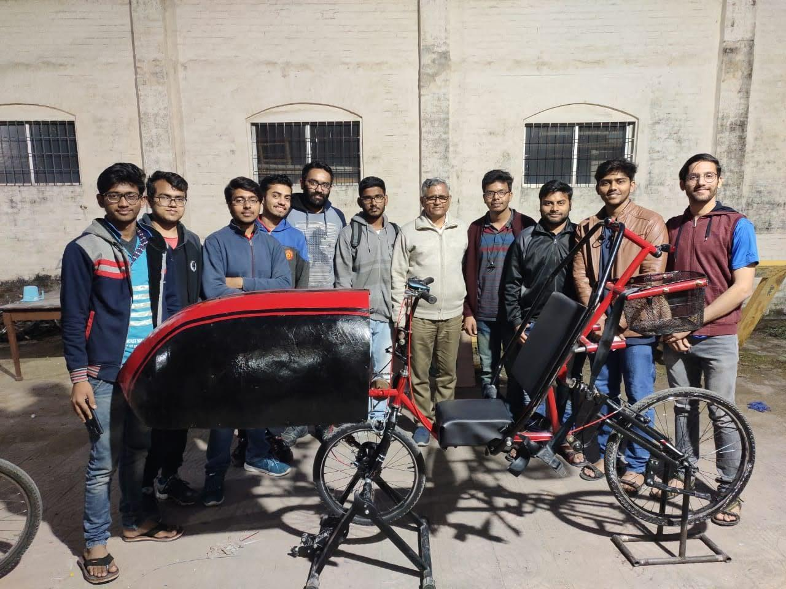
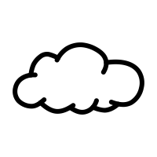
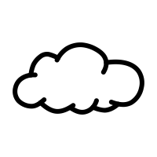

SAUVC2022,singapore
Singapore AUV challenge (SAUVC) is an exciting international challenge in
autonomous underwater robotics held during September in Singapore
annually. The competition involves building an autonomous underwater
vehicle capable of performing tasks. Team Kurma, ASME IIT Roorkee
Student Section, is among the 43 teamsselected worldwide forcompeting in
SAUVC 2022 to be held in September 2022

Human Powered Vehicle Challenge
(HPVC)ASME's International Human Powered Vehicle Challenge (HPVC)
provides an opportunity for students to bring sound engineering design principles to develop efficient,
sustainable, fast, and practical tra...
IAM3D, ASMEE-FestGlobal,2022
The ASME Innovative Additive Manufacturing 3D Challenge is organized
annually as part of E-fest by ASME. The competition is about how students
showcase their creativity by demonstrating the value added through their
ingenuity, application of sound engineering design principles, and Additive
Manufacturing technologies. Every year this theme-based competition
comes up with an innovative problem statement to give undergraduate
students worldwide an opportunity to re-engineer existing products or
create new designs. This year’s challenge was designing, testing, and
manufacturing a “D.I.R.T.”-GBRCV (Design, Integration, Research, and Test
– Ground-Based Remote Controlled Vehicle). Team Droid of ASME IIT
Roorkee achieved overall15th rankworldwide

 
